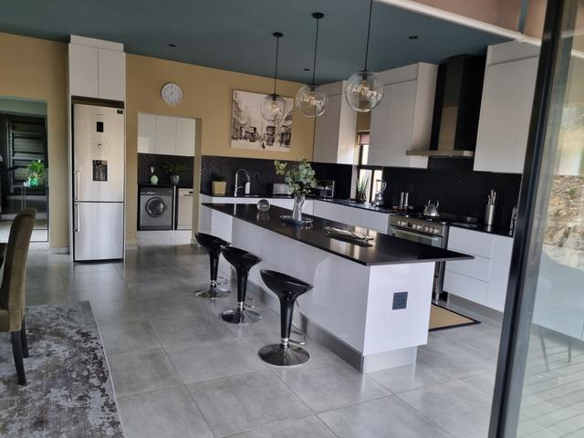

Renovation & woodworks in Plumstead
Plumstead has family homes on good-sized plots, with a lot of renovations, extensions and outdoor living areas. We're often asked for kitchens for extended homes, garage doors, and decks and pool decks.
Examples of our work
From our projects across Cape Town.





Working in Plumstead
Plumstead has family homes on good-sized plots, with gardens, garages and room to extend. Renovations, extensions and outdoor living areas are common here. Kitchens are often opened up to living rooms, and families want built-in storage for bedrooms and garages. Decks and covered patios make the most of the garden.
Kitchens · Built-in cupboards · Doors & garage doors · Furniture · Decks · Renovations →
Questions from Plumstead
Can you fit kitchens in a Plumstead extension?
Yes. We can work alongside your builder and fit the kitchen once the walls and services are ready.
Can you open up a kitchen to the living room?
We do the carpentry and fitting, and work with trusted builders and electricians for wall and wiring changes.
Can you build storage in a garage?
Yes. Shelving and cupboards along the walls keep tools and sports gear off the floor.